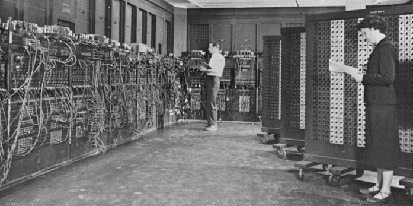
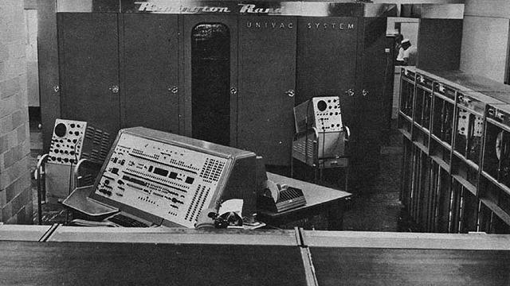
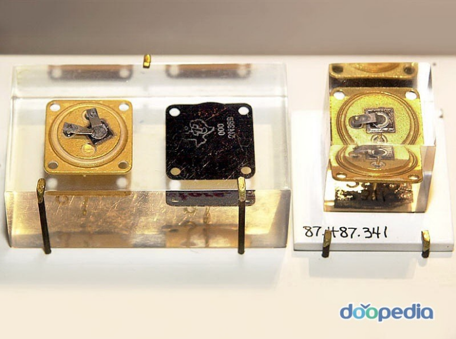
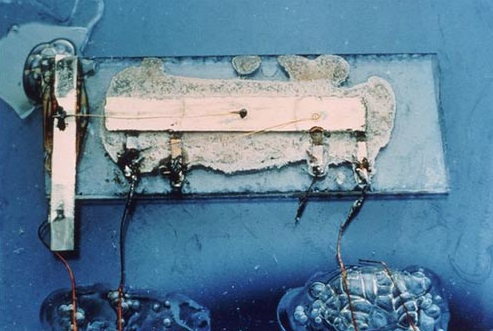
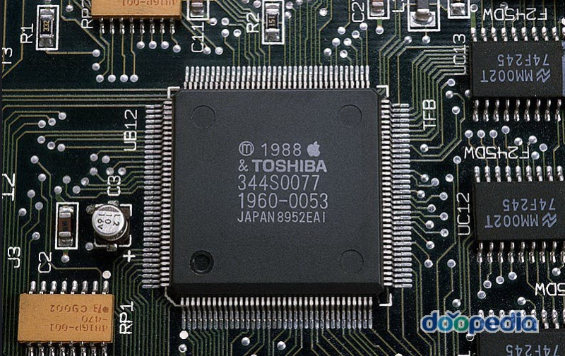

컴퓨터의 변천사
1946년 최초의 컴퓨터 ‘애니악’ 탄생

1946년 미군 탄도연구소의 요청에 의해 미국 펜실베이니아 대학에서
존 모클리(John W. Mauchly)와 프레스퍼 에커트(John P. Eckert)의
공동설계에 의해3년여의 연구 끝에 완성된 애니악은 10진수 체계를
이용한 전자식 자동계산기였다. 애니악은 개발 당시 무게 약 30t,
길이 25m, 높이 2.5m, 폭 1m의 크기에 사용 진공관의 수 1만8,800개,
저항기 7,000개, 소요전력 120kW의 거대한 기계 덩어리였다. 애니악이
발명된 이유는 전쟁당시 군사목적으로 발명되었으며
폭탄이 어디로 떨어질 지 확실한 계산을 하기 위해서 라고 한다.
1세대 컴퓨터 1951년 최초 영업 시판용 '유니박'

세계 최초로 진공관을 사용한 컴퓨터 에니악(ENIAC)을1946년에
완성시킨 J.P.에커트와 J.W.모클리의 회사를 매수(買收)한 레밍턴
랜드사(社)에서 에커트와 모클리에 의해 1951년에 개발된 유니박은
영업용으로서 시판된 최초의 컴퓨터가 되었다. 1951년에 미국 인구
통계국에 설치되었으며, 입력과 연산, 출력을 동시에 할 수 있고
자기테이프 시스템을 사용하였다. 주기억장치는 자기드럼을 사용했으며
프로그램은 기계어로 작성되었다.
2세대 컴퓨터의 시작 트랜지스터 탄생

트랜지스터는 규소나 저마늄(게르마늄)으로 만들어진 반도체를 세 겹으로
접합하여 만든 전자회로 구성요소이며 전류나 전압흐름을 조절하여 증폭,
스위치 역할을 한다. 1세대 컴퓨터가 정보를 저장하기 위한 회로소자를
진공관으로 사용했다면2세대 컴퓨터부터는 트랜지스터를 사용했다. 트랜지스터는
진공관에 비해 작고 빠르며, 가격도 저렴하다는 큰 장점이 있었고 주기억장치는
자기코어를 사용했으며 이 시기에는FORTRAN , COBAL ,ALGOL 등 고급언어가
생겨나 발전의 시작을 알리게 되었다.
3세대 컴퓨터의 기억저장매체 집적회로 발명

집적회로란 전기회로를 구성하는 트랜지스터, 다이오드, 저항, 콘덴서,
코일 등이 하나의 반도체 기판 위에 분리될 수 없는 상태로 부착된
전자소자 시스템. 집적회로가 발명된 것은 1959년이고 상용화된 것은
1960년이다. 이 직접회로는 컴퓨터의 소형화에 큰 공을 세우게 된다.
컴퓨터의 소형화는 물론 가격도 저렴해졌으며 특히 마이크로프로세서의
개발에 큰 기여를 하게 된다. 이 시기에는 운영체제가 생겨났으며 그에
맞춰 다중프로그래밍, 시분활처리 등이 가능하게 되었다. 3세대 컴퓨터의
대표적인 모델이 IBM System/360 모델이다.
4세대 중앙처리장치 마이크로 프로세서 발명

마이크로 프로세서란 컴퓨터의 산술논리연산기, 레지스터,
프로그램 카운터, 명령디코더, 제어회로 등의 연산장치와 제어장치를
1개의 작은 실리콘 칩에 모아 놓은 처리장치를 말한다.
주기억장치에 저장되어 있는 명령을 해석하고 실행하는 기능을 하며,
마이크로 프로세서는 개인용pc가 대량으로 생성되는데 큰 힘이 된 존재이다.
또한 4세대 컴퓨터의 큰 특징은 네트워크라고 말할 수 있는데,
LAN , WAN 등 다양한 네트워크 망을 통해 더 편리하게 사용할 수 있게 되었다.
5세대 컴퓨터 인공지능의 탄생
우리가 지금 사용하고 있는 5세대 컴퓨터는 인공지능(artificial intelligence:AI)이라고도 한다.
컴퓨터는 전자회로 내에 쓰는 소자(素子)에 따라 세대를 구분해왔는데,
진공광 컴퓨터를 제1세대, 트랜지스터의 제2세대, 집적회로(IC)의 제3세대,
그리고 대규모집적회로(LSI)·초대규모집적회로(VLSI)의 제4세대로
개발이 추진되어 왔다.
종래의 컴퓨터는 인간이 부여한 명령(프로그램)에 따라서 주어진 데이터를 처리할 뿐이지만,
제5세대 컴퓨터는 조지프슨(Josephson)소자 ·갈륨비소 소자 등을 써서
처리능력을 비약적으로 높이고 어떤 데이터가 들어왔는지를 스스로 판단하여
그에 적합한 처리를 스스로 생각하여 실행한다.
또 자동번역이나 각종 문의에 자유롭게 응답하는 시스템이 가능하게 되어,
인간이 만드는 기계의 성격이 아주 달라질 것으로 예상되고 있다.
만든이
202235144 최준혁
202235058 서은주